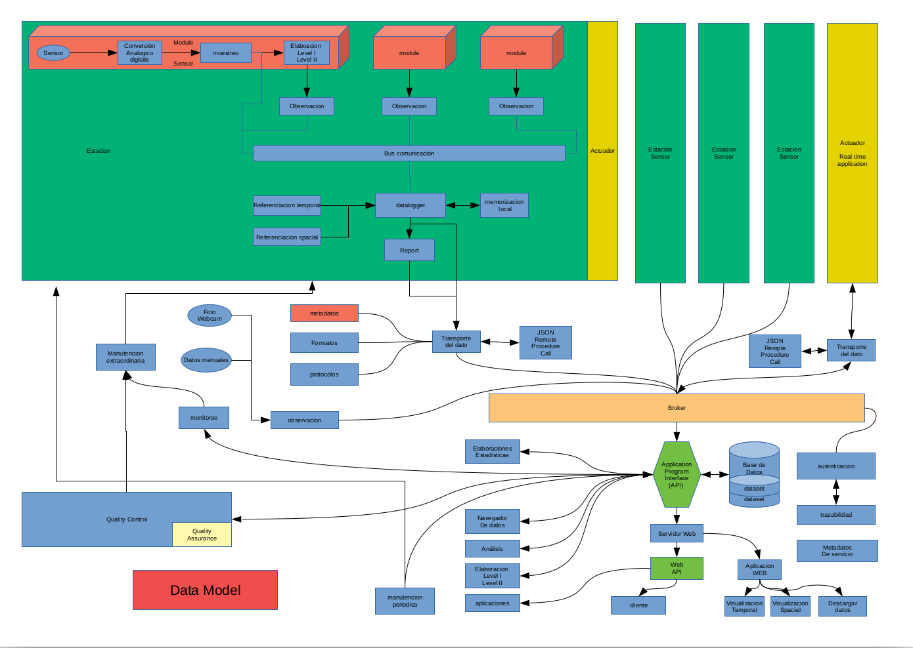

RMAP
Obiettivi R-map
Raccogliere e distribuire dati ambientali rilevati dai cittadini
Rendere disponibili questi dati ai servizi meteorologici, alle agenzie di prevenzione ambientale, alla protezione civile e istituti di ricerca
Fornire feedback ai fornitori di dati in modo che essi abbiano servizi per testare e migliorare la qualità dei dati
Divulgazione scientifica e sensibilizzazione ai temi ambientali
Coinvolgimento di scuole e università a scopi formativi
Creare un circolo virtuoso tra Enti Formativi, Pubbliche Amministazioni, Aziende private e cittadini.
Soggetti coinvolti
ARPAE Emilia Romagna SIMC
ARPA Regione Veneto
Cineca Consorzio Interuniversitario per il supercalcolo e l’innovazione tecnologica
Dipartimento informatica Università di Bologna
RaspiBO: gruppo informale di appassionati di elettronica ed informatica libera della zona di Bologna
Soggetti privati
DigitEco SRL Via del Fonditore 16A, 40138 Bologna (BO), Italy
CAE S.p.A. - Via Colunga, 20 40068 San Lazzaro di Savena (BO) - Italy
ETG SRL Via di Porto 159 - 50018 Scandicci (FI),
BE20 Innovation srl
MEEO srl https://www.meeo.it/company/
Associazione di volontariato Parco dei Cedri nel cuore
Scuole
Cosa è RMAP
Un insieme di specifiche
Protocollo di rilevamento dati:
Specifiche metrologiche dei sensori
Specifiche per la rappresentatività delle misure
Post elaborazioni
Sistema per lo scambio dati:
Protocolli di trasmissione
Formati dati
Metadati
Implementazioni hardware e software
Sono specifiche realizzazioni che aderiscono allo standard RMAP tramite open hardware e open software
Implementazioni disponibili:
stazioni Stima
Server RMAP
Le specifiche RMAP per stazioni di monitoraggio ambientale
RMAP è una rete di monitoraggio partecipativo promossa da più di dieci anni da vari soggetti pubblici e privati che si propone di definire metadati, protocolli e formati per raccogliere e condividere dati ambientali.
La rappresentazione dei dati è basata su un data model equilibrato tra le necessità di rappresentare differenti tipologie di dati e la semplicità di utilizzo e di ottimizzazione dei sistemi. Questo data model è in grado di rappresentare sia stazioni fisse e mobili, che dati osservati e previsti.
Lo standard RMAP permette l’adozione e l’interscambio di implementazioni software e hardware con differenti scelte tecniche, sia a livello server che nelle stazioni di misura; permette soluzioni modulari realizzate con open hardware stabile e basato su sviluppo cooperativo.
RMAP, di fatto, comprende una serie di standard tra cui la comunicazione tra stazione e server di raccolta dati
Schema tipo di RMAP per la citizen scienze nelle scuole

Schema flusso dati complessivo
{kind=link}
Formati
JSON
http://www.json.org/json-it.html
JSON (JavaScript Object Notation) è un semplice formato per lo scambio di dati. Per le persone è facile da leggere e scrivere, mentre per le macchine risulta facile da generare e analizzarne la sintassi.
Rispetta il data model
Ogni elemento è il report con i dati di una certa stazione per un certo istante di riferimento.
Bufr
Il Binary Universal Form for the Representation of meteorological data (BUFR) è un formato di dati binari gestito dall'Organizzazione meteorologica mondiale (WMO).
Il BUFR è stato progettato per essere portatile, compatto e universale. È possibile rappresentare qualsiasi tipo di dato, insieme al suo specifico contesto spazio-temporale e a qualsiasi altro metadato associato. Nella terminologia dell'OMM, il BUFR appartiene alla categoria delle forme di codice guidate da tabelle, in cui il significato degli elementi dei dati è determinato facendo riferimento a un insieme di tabelle che sono conservate e mantenute separatamente dal messaggio stesso.
Descrittori: tutti i descrittori degli elementi si trovano nella sezione delle specifiche BUFR nota come "Tabella B". La definizione della Tabella B di un descrittore di elemento comprende il numero, la definizione di testo breve, i parametri di decodifica (larghezza di bit, fattore di scala e bias) e il tipo (numerico, stringa di caratteri, tabella di codice, ecc.).
Formato GeoJSON per punti sparsi
http://geojson.org/ https://macwright.org/2015/03/23/geojson-second-bite.html the Internet Engineering Task Force (IETF) ha pubblicato in Agosto 2016 RFC 7946
E' un formato molto verboso (soprattutto per le serie temporali) ma rispetta il data model RMAP (anche se in modo non ottimale)
E' uno dei formati vettoriali interpretati da * GDAL/OGR * OpenLayers * QGIS * ...
Software di decodifica Bufr
WREPORT: a featureful C++ library for BUFR and CREX encoding and decoding http://sourceforge.net/p/wreport/home/Home/
ecCodes https://software.ecmwf.int/wiki/display/ECC/ecCodes+Home
Protocolli
E' fondamentale: aderire a standard IOT e l'integrazione con le funzioni e le specifiche richieste dalle applicazioni per la domotica
MQTT (Message Queue Telemetry Transport)
E' un protocollo publish/subscribe particolarmente leggero, adatto per la comunicazione M2M tra dispositivi con poca memoria o potenza di calcolo e server o message broker.
Il mittente di un messaggio si limita a "pubblicare" il proprio messaggio al broker. I destinatari si rivolgono a loro volta al broker "abbonandosi" alla ricezione di messaggi.
Il meccanismo di sottoscrizione consente ai subscriber di precisare a quali messaggi sono interessati tramite un pattern (topic).
Client e broker si scambiano messaggi di polling per monitorare lo stato delle comunicazioni; sono previsti messaggi "will and testament"
AMQP (Advanced Message Queuing Protocol)
E' protocollo per comunicazioni attraverso code di messaggi. Sono garantite l'interoperabilità, la sicurezza, l'affidabilità, la persistenza. Nella sua implementazione Rabbitmq exporta un broker MQTT e fornisce delle api web Json è il formato per il payload
HTTP/HTTPS
E' possibile utilizzare il protocollo http con una get per inviare i dati; la get http sarà immediatamente convertita dal server in una "pub" al broker mqtt. Http è molto inefficiente rispetto mqtt e qui è utilizzato solo come "bridge" a mqtt quando dovesse essere necessario.
Json-rpc
Json (JavaScript Object Notation) ed è un formato adatto ad immagazzinare varie tipologie di informazioni, e quindi a scambiare queste informazioni tra applicazioni client/server. JSON possiede una struttura semplicissima
JSON-RPC è un protocollo leggero per remote procedure call simile a XML-RPC. E' progettato per essere semplice!
Esempi:
--> {"jsonrpc": "2.0", "method": "subtract", "params": {"subtrahend": 23, "minuend": 42}, "id": 3}
<-- {"jsonrpc": "2.0", "result": 19, "id": 3}
--> {"jsonrpc": "2.0", "method": "subtract", "params": {"minuend": 42, "subtrahend": 23}, "id": 4}
<-- {"jsonrpc": "2.0", "result": 19, "id": 4}
La richiesta
Tutti i parametri trasferiti di ogni tipo sono singoli oggetti, serializzati usando JSON. Una richiesta è una chiamata a uno specifico metodo disponibile sul sistema remoto; deve contenere tre specifiche proprietà:
method - Una stringa col nome del metodo da invocare.
Params - Un array di oggetti come parametri al metodo invocato.
id - Un valore di qualsiasi tipo, usato per riferire la risposta alla richiesta a cui si sta rispondendo.
La risposta
Il server che riceve la richiesta deve rispondere con una risposta valida a tutte le richieste ricevute. Una risposta deve contenere le proprietà descritte qui sotto:
result - I dati ritornati dal metodo invocato. Se c'è un errore invocando il metodo, il valore deve essere null.
error - Uno specifico codice di errore se l'invocazione del metodo ha dato luogo a un errore, altrimenti null.
id - L'id della richiesta a cui si sta rispondendo.
Json-rpc un modo per fare tutto...
Questo un esempio di interrogazione e risposta di un sensore di temperatura
SEND:{"jsonrpc":"2.0", "method":"getjson", "params":{"node":1, "type":"TMP", "driver":"I2C", "address":72},"id": 0}
RECEIVE: {"jsonrpc":"2.0","result":{"B12101":30633},"id":0}
B12101 indica che il numero che segue è una temperatura in centesimi di gradi Kelvin, quindi 33.18 C.
SOS
Introduzione
Standard OGC dal 2007
Standard che definisce l’interfaccia di un servizio web per l’interrogazione di osservazioni, metadati dei sensori e rappresentazione delle caratteristiche osservate
Tre servizi di base:
GetCapabilities: informazioni sul servizio e sui sensori disponibli
DescribeSensor: metadati del sensore (SensorML)
GetObservation: valori misurati dai sensori (Observations and Measurements)
Più Servizi opzionali
Parole chiave
Procedure è ciò che produce l’osservazione
Sensore
Postprocessamento (e.g. media, massima, minima)
Observed property è la proprietà osservata
Feature Of Interest è l’oggetto georeferenziato che viene misurato. Nel nostri casi, generalmente coincide con la stazione
Observation offering è un gruppo di osservazioni che sono fornite insieme
Singolo sensore
Stazione
Rete
...
Compatibilità con rmap
Una procedure può coincidere con un sensore e.g. -/1212345,4312345/rmap/254,0,0/103,2000,-,-/B12101
Una observed property può coincidere con
La terna (timerange, livello, var) e.g. 254,0,0/103,2000,-,-/B12101
La sola var e.g. B12101
Una feature of interest può coincidere con la stazione e.g. -/1212345,4312345/rmap
Implementazione in rmap
http://rmap.cc/sos?service=SOS&acceptVersions=1.0.0&request=GetCapabilities
http://rmap.cc/sos/?service=SOS&version=1.0.0&request=DescribeSensor&procedure=urn:rmap:procedure:digiteco/1162336,4465346/rmap/254,0,0/103,2000,-,-/B12101
http://rmap.cc/sos/?service=SOS&version=1.0.0&request=GetObservation&responseFormat=text/xml;subtype="om/1.0.0"&offering=urn:rmap:procedure:digiteco/1162336,4465346/rmap/254,0,0/103,2000,-,-/B12101&observedProperty=urn:rmap:procedure:digiteco/1162336,4465346/rmap/254,0,0/103,2000,-,-/B12101